4 Generalized Linear Models
After completing this module, students will be able to:
4.1 Describe common statistical distributions and types of data they generate
4.2 Analyze data using non-normal distributions in R
4.3 Evaluate and justify model fit
4.4 Interpret and report results from statistical analysis
4.1 Overview of Generalized Linear Models
Generalized linear models (GLMs) are a class of linear-based regression models developed to handle varying types of error distributions. These class of models are extremely useful for data types that may not conform to what is typically expected given Gaussian expectations or assumptions. For example, data that is binary (e.g. 0 or 1, alive or dead) or count data that is never negative all have different properties. While data transformations prior to model implementation can be done, it may be difficult to interpret results or may not help in meeting the assumptions of the model. In this section we first start with basic data transformations that can be applied to ordinary linear models and then move into different types of GLMs.
4.1.1 Example: One-way ANOVA with non-normal data
In this example we will run an ANOVA with non-normal data. To do this we first must load the InsectSprays data:
Now we need to filter the data to just 4 treatments (A, B, C, F):
Let’s plot out data:
ggplot(d, aes(x=spray,y=count)) +
geom_boxplot(outlier.shape = NA, width = 0.5) +
geom_jitter(height=0,width=.1, size = 3, pch = 21) +
labs(x = "Spray Treatment Type",
y = "Count") +
theme_bw() +
theme(axis.title = element_text(face= 'bold', size = 15),
axis.text = element_text(face= 'bold', size = 15))Figure 2.1: Insect count data by spray type
Let’s examine a histogram of the response variable ‘count’.
Figure 2.2: Histogram of insect counts.
The distribution is not visually normal but remember, with linear models the assumption of normality is not necessarily with the response variable but is instead about the errors (residuals of the model). Therefore, this histogram can hint of what sort of transformations we may want to use to have a model that better meets assumptions.
While not ideal let’s construct a linear model to examine the effect of the different sprays on insect counts without executing any data transformations or applying fancy GLMs:
## Analysis of Deviance Table (Type II Wald chisquare tests)
##
## Response: count
## Chisq Df Pr(>Chisq)
## spray 86.656 3 < 2.2e-16 ***
## ---
## Signif. codes: 0 '***' 0.001 '**' 0.01 '*' 0.05 '.' 0.1 ' ' 1Let’s check the residuals of the model:
Figure 4.1: Residual plots.
plot(resid(lm1)~fitted(lm1)) ## residuals should be evenly dispersed around 0 across the range of x's
abline(h=0) # funnel shapes or curvature is badFigure 4.2: Residual plots.
Figure 2.5: QQ plot
## [1] 45 46Normality of the residuals would pass an eye check. However when we look at the variance of the residuals across spray treatment types we see evidence of violation where the variances are not necessarily homogeneous for each group:
Figure 4.3: Boxplot of residuals to check for heterogeneity.
Let’s use emmeans to calculate model means and confidence intervals.
## spray emmean SE df lower.CL upper.CL
## A 14.50 1.26 43 11.961 17.04
## B 15.33 1.26 43 12.794 17.87
## C 2.08 1.26 43 -0.456 4.62
## F 16.67 1.26 43 14.127 19.21
##
## Confidence level used: 0.95Note all the standard error estimates are the same and the lower CL can be negative (although we know that counts can never be negative). Is this ok?
4.1.2 Log-linear model
Now let’s use a log-linear model to examine the effect of the different sprays on insect counts. To implement a log-linear model we can log transform the counts with the log() function. Note that the this function applies a natural logarithmic transformation to the specified variable or vector. If you want to use a base 10 logarithmic transformation then the correct function to use would be log10. Notice add 1 to the variable before the transformation because log(0) is undefined. You could add any small constant (e.g. 0.01 or 0.0001) but +1 is convenient because zeros go back to zero after the transformation.
## [1] -Inf## [1] 0lm2 <- glmmTMB(log(count+1)~spray, data=d)
Anova(lm2, type=2) ## car::Anova will print out an ANOVA table testing## Analysis of Deviance Table (Type II Wald chisquare tests)
##
## Response: log(count + 1)
## Chisq Df Pr(>Chisq)
## spray 185.5 3 < 2.2e-16 ***
## ---
## Signif. codes: 0 '***' 0.001 '**' 0.01 '*' 0.05 '.' 0.1 ' ' 1Let’s check residuals:
Figure 4.4: Residual plots.
plot(resid(lm2)~fitted(lm2)) + ## residuals should be evenly dispersed around 0 across the range of x's
abline(h=0) # funnel shapes or curvature is badFigure 4.5: Residual plots.
## integer(0)Let’s plot the QQplot and boxplots next:
Figure 4.6: QQ and box plots.
## [1] 27 25Figure 4.7: QQ and box plots.
We can see above that the transformation makes the homogeneity of the residuals a little but more constant and consistent across treatment types. This seems to help especially treatment C relative to the model without the log transformation. However, the residuals of treatment C are still highly variable compared to treatments A, B, and C.
Let’s use emmeans again:
## spray emmean SE df lower.CL upper.CL
## A 2.697 0.115 43 2.465 2.93
## B 2.757 0.115 43 2.525 2.99
## C 0.953 0.115 43 0.721 1.18
## F 2.816 0.115 43 2.584 3.05
##
## Results are given on the log(mu + 1) (not the response) scale.
## Confidence level used: 0.95Note that the means are now on the log-transformed scale, as pointed out at the bottom on the emmeans table. Usually we want to back-transform the means to the original scale so they are easier to interpret. To calculate back-transformed means with ‘emmeans’ we can add additional arguments to the function:
## spray response SE df lower.CL upper.CL
## A 13.83 1.700 43 10.76 17.70
## B 14.75 1.810 43 11.49 18.85
## C 1.59 0.298 43 1.06 2.27
## F 15.70 1.920 43 12.25 20.06
##
## Confidence level used: 0.95
## Intervals are back-transformed from the log(mu + 1) scaleNow notice how the means columns has been relabeled response and is in the same units that we originally started with.
4.1.3 Generalized linear models (GLMs)
Now let’s use GLMs to examine the effect of the different sprays:
The nice thing about using glmmTMB() is that it is a general function that conducts can a generalized linear model. To do this, we simply specify the ‘family’ (aka error distribution). The default is the ‘Gaussian’ distribution (normal), so if we don’t specify a family it run a simple linear model. In the example above we implement a Poisson distribution, a distribution that is frequently used with count data. All the model “calculations” are saved in an object we called ‘glm1’. An alternative to the glmmTMB() function is glm() which is available in base R.
## Analysis of Deviance Table (Type II Wald chisquare tests)
##
## Response: count
## Chisq Df Pr(>Chisq)
## spray 98.376 3 < 2.2e-16 ***
## ---
## Signif. codes: 0 '***' 0.001 '**' 0.01 '*' 0.05 '.' 0.1 ' ' 1For the ANOVA table above, the null hypothesis that all group means are equal. The argument, type = 2, provides margin tests, which is usually better than the default Type I, especially for more complicated models (See 2.3.1 Box 3 for additional information about the type 2 method). For GLMs, Anova returns a likelihood ratio test with a chi-sq value.
## Family: poisson ( log )
## Formula: count ~ spray
## Data: d
##
## AIC BIC logLik deviance df.resid
## 273.9 281.4 -133.0 265.9 44
##
##
## Conditional model:
## Estimate Std. Error z value Pr(>|z|)
## (Intercept) 2.67415 0.07581 35.27 <2e-16 ***
## sprayB 0.05588 0.10574 0.53 0.597
## sprayC -1.94018 0.21389 -9.07 <2e-16 ***
## sprayF 0.13926 0.10367 1.34 0.179
## ---
## Signif. codes: 0 '***' 0.001 '**' 0.01 '*' 0.05 '.' 0.1 ' ' 1The coefficients allow you rebuild the means from the linear model, just like we did in 2.3. In this case, rebuilding the model from the coefficients is not super helpful because they are still on the log-scale and the p-values aren’t as meaningful. Residual deviance should be about equal to the degrees of freedom. More than twice as high is problematic (note: we will come back to this problem when we discuss “overdispersion” in the next section).
Now let’s check assumptions of model by examining residuals:
Figure 4.8: Residual plots.
plot(resid(glm1)~fitted(glm1)) ## residuals should be evenly dispersed around 0 across the range of x's
abline(h=0) # funnel shapes or curvature is badFigure 4.9: Residual plots.
qqPlot(resid(glm1)) ## calls from car package, residuals should line up pretty closely to the blue lineFigure 4.10: QQ and box plots.
## [1] 45 46# points that drift from line might be outliers
boxplot(resid(glm1) ~ d$spray) ## variances should be homogeneous for each groupFigure 4.11: QQ and box plots.
Above, we see further improvement in the residual variances across treatment types. Diagnosing complex GLMs can be very difficult. Residuals are often NOT NORMALLY DISTRIBUTED, even though they should be. We will return to this later.
## spray emmean SE df asymp.LCL asymp.UCL
## A 2.674 0.0758 Inf 2.526 2.82
## B 2.730 0.0737 Inf 2.586 2.87
## C 0.734 0.2000 Inf 0.342 1.13
## F 2.813 0.0707 Inf 2.675 2.95
##
## Results are given on the log (not the response) scale.
## Confidence level used: 0.95The emmeans code above will print off the means, SE, and confidence intervals for each treatment group. Note, the coefficients are on the log-scale (look at model specifications of glm1 object).
We can also use emmeans() to make pairwise comparisons to directly compare each spray to the others.
emmeans(glm1, pairwise~spray, type='response') ## adding 'pairwise' will conduct pairwise contrasts -- ie. compare each group mean to the others## $emmeans
## spray rate SE df asymp.LCL asymp.UCL
## A 14.50 1.100 Inf 12.50 16.82
## B 15.33 1.130 Inf 13.27 17.72
## C 2.08 0.417 Inf 1.41 3.08
## F 16.67 1.180 Inf 14.51 19.14
##
## Confidence level used: 0.95
## Intervals are back-transformed from the log scale
##
## $contrasts
## contrast ratio SE df null z.ratio p.value
## A / B 0.946 0.1000 Inf 1 -0.528 0.9522
## A / C 6.960 1.4900 Inf 1 9.071 <.0001
## A / F 0.870 0.0902 Inf 1 -1.343 0.5352
## B / C 7.360 1.5700 Inf 1 9.364 <.0001
## B / F 0.920 0.0940 Inf 1 -0.816 0.8468
## C / F 0.125 0.0265 Inf 1 -9.803 <.0001
##
## P value adjustment: tukey method for comparing a family of 4 estimates
## Tests are performed on the log scaleAdding the argument ‘pairwise’ will conduct pairwise contrasts – ie. compare each group mean to the others. This automatically adjusts p-values using the ‘tukey’ adjust. This can be changed using ‘adjust=XX’ within the emmeans() function. The type=‘response’ will back-transform (i.e. in this case, exponentiate) to the original scale
Let’s compare residuals for normal, log-transformed, and poisson models:
par(mfrow=c(1,3)) #allow plots to be shown in three
boxplot(resid(lm1) ~ d$spray, main = "Linear")
boxplot(resid(lm2) ~ d$spray, main = "Log-Linear")
boxplot(resid(glm1) ~ d$spray, main = "GLM") Figure 2.19: Residual plots for all models.
Let’s also compare means for normal, log-transformed, and poisson models:
## spray emmean SE df lower.CL upper.CL
## A 14.50 1.26 43 11.961 17.04
## B 15.33 1.26 43 12.794 17.87
## C 2.08 1.26 43 -0.456 4.62
## F 16.67 1.26 43 14.127 19.21
##
## Confidence level used: 0.95## spray response SE df lower.CL upper.CL
## A 13.83 1.700 43 10.76 17.70
## B 14.75 1.810 43 11.49 18.85
## C 1.59 0.298 43 1.06 2.27
## F 15.70 1.920 43 12.25 20.06
##
## Confidence level used: 0.95
## Intervals are back-transformed from the log(mu + 1) scale## spray rate SE df asymp.LCL asymp.UCL
## A 14.50 1.100 Inf 12.50 16.82
## B 15.33 1.130 Inf 13.27 17.72
## C 2.08 0.417 Inf 1.41 3.08
## F 16.67 1.180 Inf 14.51 19.14
##
## Confidence level used: 0.95
## Intervals are back-transformed from the log scaleWhat model do you think we should go with?
4.2 Overdispersion
In this section we will go over how to deal with overdispersion. While overdispersion is covered more extensively in the lecture portion of the class, we will quickly outline what it is.
Overdispersion is when variation is higher than what would be expected. A great example of how overdispersion would biologically come about in a given dataset is found from this website. To summarize it briefly, imagine if you are collecting tree seedlings within a forest. These seedlings are naturally not uniformly distributed throughout the forest area. Instead they are more likely clumped, where most plots don’t have any seedlings but a few have a ton. Therefore your counts of seedlings for a given plot can vary from 0 to numbers that are extremely high. This sort of variation can cause overdispersion to be observed in the model if it is not appropriately accounted for.
Let’s load the necessary libraries:
Load in and read about the beall.webworms dataset. The variables of interest are the y=count of webworms, spray = spray treatment, and lead = lead pesticide treatment. Don’t worry about the block or other variables for now.
## starting httpd help server ... done## row col y block trt spray lead
## 1 1 1 1 B1 T1 N N
## 2 2 1 0 B1 T1 N N
## 3 3 1 1 B1 T1 N N
## 4 4 1 3 B1 T1 N N
## 5 5 1 6 B1 T1 N N
## 6 6 1 0 B2 T1 N NLet’s examine and plot the data:
ggplot(d1, aes(x=spray, y=y, fill=lead)) +
geom_violin(scale="width", adjust=2) +
geom_point(position = position_jitterdodge(jitter.width=.5,
jitter.height=.1,
dodge.width = 1),
alpha=.1) +
theme_bw(base_size = 14)Figure 2.23: Plot of webworm data.
Let’s now run a model with the interaction of spray and lead. Its count data, so lets assume a Poisson distribution.
Examine the model summary:
##
## Call:
## glm(formula = y ~ spray * lead, family = "poisson", data = d1)
##
## Coefficients:
## Estimate Std. Error z value Pr(>|z|)
## (Intercept) 0.33647 0.04688 7.177 7.12e-13 ***
## sprayY -1.02043 0.09108 -11.204 < 2e-16 ***
## leadY -0.49628 0.07621 -6.512 7.41e-11 ***
## sprayY:leadY 0.29425 0.13917 2.114 0.0345 *
## ---
## Signif. codes: 0 '***' 0.001 '**' 0.01 '*' 0.05 '.' 0.1 ' ' 1
##
## (Dispersion parameter for poisson family taken to be 1)
##
## Null deviance: 1955.9 on 1299 degrees of freedom
## Residual deviance: 1720.4 on 1296 degrees of freedom
## AIC: 3125.5
##
## Number of Fisher Scoring iterations: 6## Analysis of Deviance Table (Type II tests)
##
## Response: y
## LR Chisq Df Pr(>Chisq)
## spray 188.707 1 < 2.2e-16 ***
## lead 42.294 1 7.853e-11 ***
## spray:lead 4.452 1 0.03485 *
## ---
## Signif. codes: 0 '***' 0.001 '**' 0.01 '*' 0.05 '.' 0.1 ' ' 1## spray lead rate SE df asymp.LCL asymp.UCL
## N N 1.400 0.0656 Inf 1.277 1.535
## Y N 0.505 0.0394 Inf 0.433 0.588
## N Y 0.852 0.0512 Inf 0.758 0.959
## Y Y 0.412 0.0356 Inf 0.348 0.488
##
## Confidence level used: 0.95
## Intervals are back-transformed from the log scaleWe need to load library(performance) to test for overdispersion:
## Warning: package 'performance' was built under R version 4.3.3## # Overdispersion test
##
## dispersion ratio = 1.355
## Pearson's Chi-Squared = 1755.717
## p-value = < 0.001## Overdispersion detected.Note that there is overdispersion and the “dispersion ratio = 1.355”, which is (approximately) the Residual deviance over the degrees of freedom from the summary() printout.
Now let’s implement the negative binomial distribution, which will account for the overdispersion in the data.
## Analysis of Deviance Table (Type II Wald chisquare tests)
##
## Response: y
## Chisq Df Pr(>Chisq)
## spray 125.5047 1 < 2.2e-16 ***
## lead 26.8005 1 2.256e-07 ***
## spray:lead 3.3942 1 0.06542 .
## ---
## Signif. codes: 0 '***' 0.001 '**' 0.01 '*' 0.05 '.' 0.1 ' ' 1## spray lead response SE df asymp.LCL asymp.UCL
## N N 1.400 0.0855 Inf 1.242 1.578
## Y N 0.505 0.0441 Inf 0.425 0.599
## N Y 0.852 0.0611 Inf 0.741 0.981
## Y Y 0.412 0.0391 Inf 0.342 0.497
##
## Confidence level used: 0.95
## Intervals are back-transformed from the log scaleLet’s use the DHARMa package to simulate residuals for poisson and negative binomial models.
## Warning: package 'DHARMa' was built under R version 4.3.3## This is DHARMa 0.4.7. For overview type '?DHARMa'. For recent changes, type news(package = 'DHARMa')We can interpret the simulated residuals very similarly to the raw residuals we have previously examined. The residuals should line up along the line in the QQ plot and there should be (roughly) equal scatter in the residuals among the groups. First let’s look at simulated residuals from the Poisson model:
## DHARMa:testOutliers with type = binomial may have inflated Type I error rates for integer-valued distributions. To get a more exact result, it is recommended to re-run testOutliers with type = 'bootstrap'. See ?testOutliers for details
## Object of Class DHARMa with simulated residuals based on 250 simulations with refit = FALSE . See ?DHARMa::simulateResiduals for help.
##
## Scaled residual values: 0.4574871 0.1249353 0.3765507 0.8898169 0.9947878 0.1384856 0.8427982 0.7401398 0.5451185 0.9247921 0.04867315 0.9158836 0.4210366 0.2450423 0.6110091 0.05695033 0.5344315 0.9367373 0.8666021 0.7861569 ...Histograms of the simulated residuals will be different than before. Here the simulated residuals should be flat. Its ok if the bars bump up and down, but they should be on average flat across the graph.The bars shouldn’t be peaked (eg. “normally” distributed) or U-shaped or increasing/decreasing.
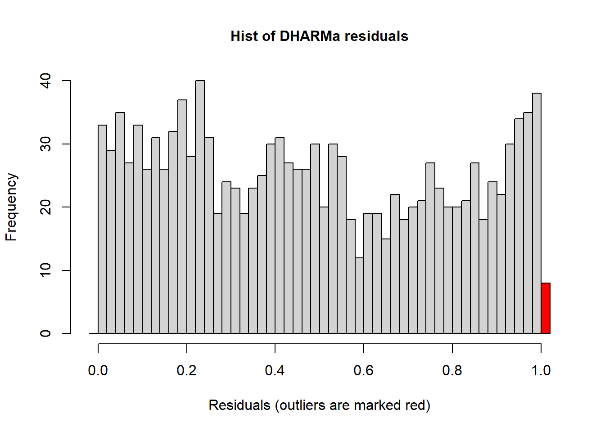
The residuals from the Poisson model look ok, but not perfect. The line in the QQ plot deviates from 1:1 and the variances are a little different among the groups. The histogram looks ok.
Now let’s look at residuals for negative binomial model:
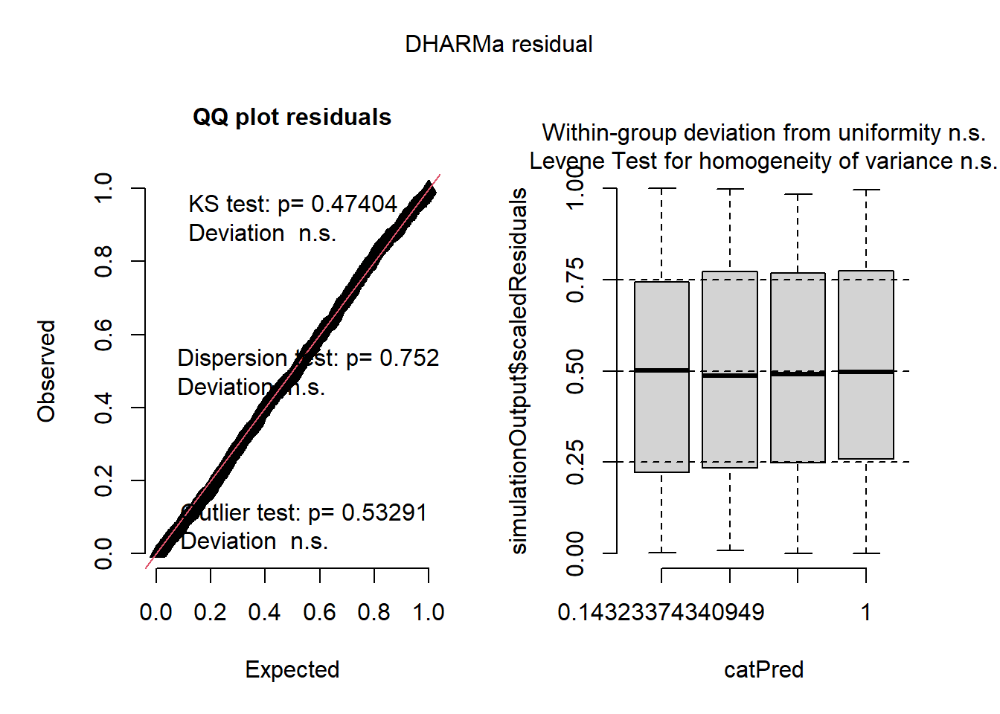
## Object of Class DHARMa with simulated residuals based on 250 simulations with refit = FALSE . See ?DHARMa::simulateResiduals for help.
##
## Scaled residual values: 0.4821899 0.2591288 0.3967079 0.8858496 0.992 0.117201 0.7325008 0.6766148 0.4083655 0.8192085 0.10593 0.8988023 0.621979 0.3468156 0.7885132 0.2689479 0.657901 0.92479 0.7941977 0.8523115 ...## Object of Class DHARMa with simulated residuals based on 250 simulations with refit = FALSE . See ?DHARMa::simulateResiduals for help.
##
## Scaled residual values: 0.4821899 0.2591288 0.3967079 0.8858496 0.992 0.117201 0.7325008 0.6766148 0.4083655 0.8192085 0.10593 0.8988023 0.621979 0.3468156 0.7885132 0.2689479 0.657901 0.92479 0.7941977 0.8523115 ...4.3 Binomial GLM
In this section we will run a GLM with a binomial error distribution. We load the following packages:
library(tidyverse)
library(emmeans)
library(car)
library(agridat)
library(DHARMa)
library(glmmTMB)
library(viridis)We will use the Titanic survival dataset for the binomial GLM.
## LOAD TITANIC SURVIVAL DATASET
data("TitanicSurvival")
t1 <- TitanicSurvival %>% filter(age>17) # filter out children
head(t1)## survived sex age passengerClass
## Allen, Miss. Elisabeth Walton yes female 29 1st
## Allison, Mr. Hudson Joshua Crei no male 30 1st
## Allison, Mrs. Hudson J C (Bessi no female 25 1st
## Anderson, Mr. Harry yes male 48 1st
## Andrews, Miss. Kornelia Theodos yes female 63 1st
## Andrews, Mr. Thomas Jr no male 39 1stLet’s quickly plot the data:
Figure 2.34: Plot of titanic survival data.
Now we can construct a GLM to estimate survival as a function of sex and passengerClass while include Age as co-variate.
Let’s look at the ANOVA table and summary of the model:
## Analysis of Deviance Table (Type II Wald chisquare tests)
##
## Response: survived
## Chisq Df Pr(>Chisq)
## sex 141.6195 1 < 2.2e-16 ***
## passengerClass 54.3629 2 1.568e-12 ***
## age 8.0343 1 0.00459 **
## sex:passengerClass 42.2193 2 6.795e-10 ***
## ---
## Signif. codes: 0 '***' 0.001 '**' 0.01 '*' 0.05 '.' 0.1 ' ' 1## Family: binomial ( logit )
## Formula: survived ~ sex * passengerClass + age
## Data: t1
##
## AIC BIC logLik deviance df.resid
## 766.4 799.9 -376.2 752.4 885
##
##
## Conditional model:
## Estimate Std. Error z value Pr(>|z|)
## (Intercept) 4.440407 0.637348 6.967 3.24e-12 ***
## sexmale -4.105509 0.540239 -7.599 2.97e-14 ***
## passengerClass2nd -1.709637 0.609584 -2.805 0.00504 **
## passengerClass3rd -3.957656 0.562162 -7.040 1.92e-12 ***
## age -0.025352 0.008944 -2.834 0.00459 **
## sexmale:passengerClass2nd -0.203859 0.698880 -0.292 0.77052
## sexmale:passengerClass3rd 2.655928 0.597514 4.445 8.79e-06 ***
## ---
## Signif. codes: 0 '***' 0.001 '**' 0.01 '*' 0.05 '.' 0.1 ' ' 1Now we can check residuals:
Figure 4.12: Residual plots.
plot(resid(tglm1)~fitted(tglm1)) + ## residuals should be evenly dispersed around 0 across the range of x's
abline(h=0) # funnel shapes or curvature is badFigure 4.13: Residual plots.
## integer(0)Figure 3.6: Residual plots.
## Allison, Mrs. Hudson J C (Bessi Evans, Miss. Edith Corse
## 3 90Figure 3.7: Residual plots.
Figure 4.14: Simulated residual plots.
Figure 4.15: Simulated residual plots.
To make sense of the model output let’s use the emmeans package:
## $emmeans
## sex passengerClass emmean SE df asymp.LCL asymp.UCL
## female 1st 3.592 0.516 Inf 2.580 4.6034
## male 1st -0.514 0.192 Inf -0.890 -0.1371
## female 2nd 1.882 0.325 Inf 1.246 2.5183
## male 2nd -2.427 0.303 Inf -3.022 -1.8324
## female 3rd -0.366 0.203 Inf -0.764 0.0322
## male 3rd -1.815 0.170 Inf -2.149 -1.4814
##
## Results are given on the logit (not the response) scale.
## Confidence level used: 0.95
##
## $contrasts
## contrast estimate SE df z.ratio p.value
## female 1st - male 1st 4.106 0.540 Inf 7.599 <.0001
## female 1st - female 2nd 1.710 0.610 Inf 2.805 0.0567
## female 1st - male 2nd 6.019 0.602 Inf 9.997 <.0001
## female 1st - female 3rd 3.958 0.562 Inf 7.040 <.0001
## female 1st - male 3rd 5.407 0.551 Inf 9.810 <.0001
## male 1st - female 2nd -2.396 0.377 Inf -6.354 <.0001
## male 1st - male 2nd 1.913 0.364 Inf 5.262 <.0001
## male 1st - female 3rd -0.148 0.291 Inf -0.507 0.9959
## male 1st - male 3rd 1.302 0.270 Inf 4.826 <.0001
## female 2nd - male 2nd 4.309 0.444 Inf 9.700 <.0001
## female 2nd - female 3rd 2.248 0.383 Inf 5.872 <.0001
## female 2nd - male 3rd 3.698 0.367 Inf 10.088 <.0001
## male 2nd - female 3rd -2.061 0.362 Inf -5.699 <.0001
## male 2nd - male 3rd -0.612 0.344 Inf -1.776 0.4812
## female 3rd - male 3rd 1.450 0.255 Inf 5.678 <.0001
##
## Results are given on the log odds ratio (not the response) scale.
## P value adjustment: tukey method for comparing a family of 6 estimatesThe estimates in the above output are transformed via the link funciton (logit in this case). We can obtain back-transformed means. This will provide the estimated probability of survival for each sex:passengerClass combination.
emmeans(tglm1, pairwise ~ sex:passengerClass, type="response") ## type= does contrasts before back-transforming (more appropriate!)## $emmeans
## sex passengerClass prob SE df asymp.LCL asymp.UCL
## female 1st 0.9732 0.0135 Inf 0.9296 0.990
## male 1st 0.3743 0.0450 Inf 0.2911 0.466
## female 2nd 0.8679 0.0372 Inf 0.7766 0.925
## male 2nd 0.0811 0.0226 Inf 0.0465 0.138
## female 3rd 0.4096 0.0491 Inf 0.3178 0.508
## male 3rd 0.1400 0.0205 Inf 0.1044 0.185
##
## Confidence level used: 0.95
## Intervals are back-transformed from the logit scale
##
## $contrasts
## contrast odds.ratio SE df null z.ratio p.value
## female 1st / male 1st 60.6736 32.8000 Inf 1 7.599 <.0001
## female 1st / female 2nd 5.5270 3.3700 Inf 1 2.805 0.0567
## female 1st / male 2nd 411.1691 248.0000 Inf 1 9.997 <.0001
## female 1st / female 3rd 52.3345 29.4000 Inf 1 7.040 <.0001
## female 1st / male 3rd 223.0143 123.0000 Inf 1 9.810 <.0001
## male 1st / female 2nd 0.0911 0.0344 Inf 1 -6.354 <.0001
## male 1st / male 2nd 6.7767 2.4600 Inf 1 5.262 <.0001
## male 1st / female 3rd 0.8626 0.2510 Inf 1 -0.507 0.9959
## male 1st / male 3rd 3.6756 0.9910 Inf 1 4.826 <.0001
## female 2nd / male 2nd 74.3935 33.1000 Inf 1 9.700 <.0001
## female 2nd / female 3rd 9.4690 3.6200 Inf 1 5.872 <.0001
## female 2nd / male 3rd 40.3503 14.8000 Inf 1 10.088 <.0001
## male 2nd / female 3rd 0.1273 0.0460 Inf 1 -5.699 <.0001
## male 2nd / male 3rd 0.5424 0.1870 Inf 1 -1.776 0.4812
## female 3rd / male 3rd 4.2613 1.0900 Inf 1 5.678 <.0001
##
## P value adjustment: tukey method for comparing a family of 6 estimates
## Tests are performed on the log odds ratio scaleIn order to plot we need to create new variable that is 0 or 1, instead of ‘yes’ or ‘no’.
Now we can make a plot with regression lines:
ggplot(t1, aes(x=age, y=surv, color=sex)) +
geom_jitter(height=.1, width=0) +
geom_smooth(method="glm",
method.args=list(family="binomial"),
formula = y ~ x, se=F, lwd=1.5) +
facet_wrap(~passengerClass) +
theme_bw(base_size = 20)Figure 4.16: Plot of survival probabilities by sex and class.
We can improve the aesthetics of the plot:
tm <- emmeans(tglm1, ~ sex:passengerClass, type="response") %>% as.data.frame()
plot1 <- ggplot() +
geom_jitter(data=t1 %>% filter(sex=='female'),
aes(x=passengerClass, y=surv+.01, color=sex),
height=0, width=.25, size=1, alpha=.1) +
geom_jitter(data=t1 %>% filter(sex=='male'),
aes(x=passengerClass, y=surv-.01, color=sex),
height=0, width=.25, size=1, alpha=.1) +
geom_errorbar(data=tm,
aes(x=passengerClass,
y=prob, ymin=(prob-SE),
ymax=(prob+SE), color=sex),
width=.2, lwd=1.25,
position = position_dodge(width=0.5)) +
geom_point(data=tm ,
aes(x=passengerClass, y=prob, color=sex),
size=5, position=position_dodge(width=0.5)) +
scale_y_continuous('survival', labels = scales::percent) +
scale_color_viridis(discrete = T) +
theme(panel.background = element_blank(),
panel.border = element_rect(color="black",
fill=NA, size=2)) +
theme(axis.ticks.length=unit(0.3, "cm"),
axis.text.x = element_text(margin=margin(5,5,5,5,"pt"),colour="black"),
axis.text.y = element_text(margin=margin(5,5,5,5,"pt"),colour="black")) + ## change axis tick marks to make them a little longer
#theme(axis.text.x = element_text(angle = 45, vjust = 1, hjust=1)) +
theme(text = element_text(size=20)) ## Warning: The `size` argument of `element_rect()` is deprecated as of ggplot2 3.4.0.
## ℹ Please use the `linewidth` argument instead.
## This warning is displayed once every 8 hours.
## Call `lifecycle::last_lifecycle_warnings()` to see where this warning was
## generated.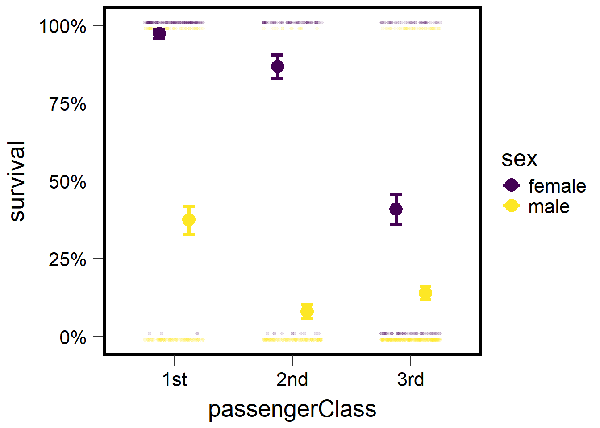
plot2 <- ggplot() +
geom_jitter(data=t1 ,
aes(x=passengerClass, y=surv,
color=passengerClass),
height=.01, width=.35,
size=1, alpha=.2) +
geom_errorbar(data=tm ,
aes(x=passengerClass,
y=prob, ymin=(prob-SE),
ymax=(prob+SE),
color=passengerClass),
width=.2, lwd=1.25) + ## make bars thinner
geom_point(data=tm ,
aes(x=passengerClass,
y=prob, color=passengerClass), size=5) +
facet_wrap(~sex) +
scale_y_continuous('survival', labels = scales::percent) +
scale_color_viridis(discrete = T, option = 'C', direction=-1) +
theme(panel.background = element_blank(),
panel.border = element_rect(color="black", fill=NA, size=2)) +
theme(axis.ticks.length=unit(0.3, "cm"),
axis.text.x = element_text(margin=margin(5,5,5,5,"pt"),colour="black"),
axis.text.y = element_text(margin=margin(5,5,5,5,"pt"),colour="black")) +
theme(text = element_text(size=20))
plot2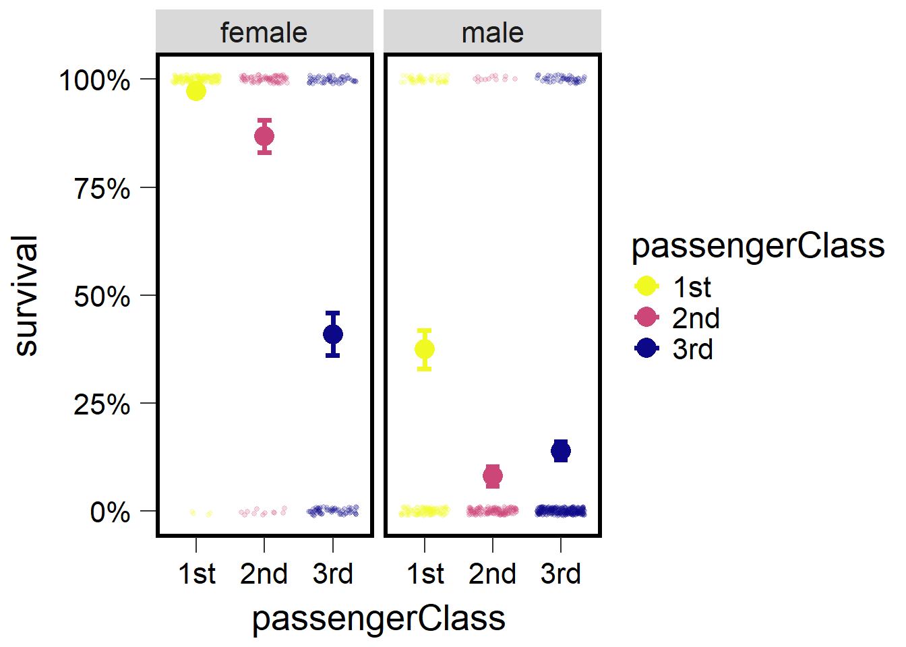
4.4 Gamma GLM
In this section we will learn about implementing the Gamma distribution in R. This distribution is helpful in for modeling a variety of data but is most frequently applied to data that is right skewed but not necessarily count data. The next several examples will illustrate how to generate Gamma distributed data based on several parameters as well as how to implement Gamma GLMs.
4.4.1 Example 1
Here we generate a distribution using the rgamma() function. Remember to set.seed so we get reproducible results.
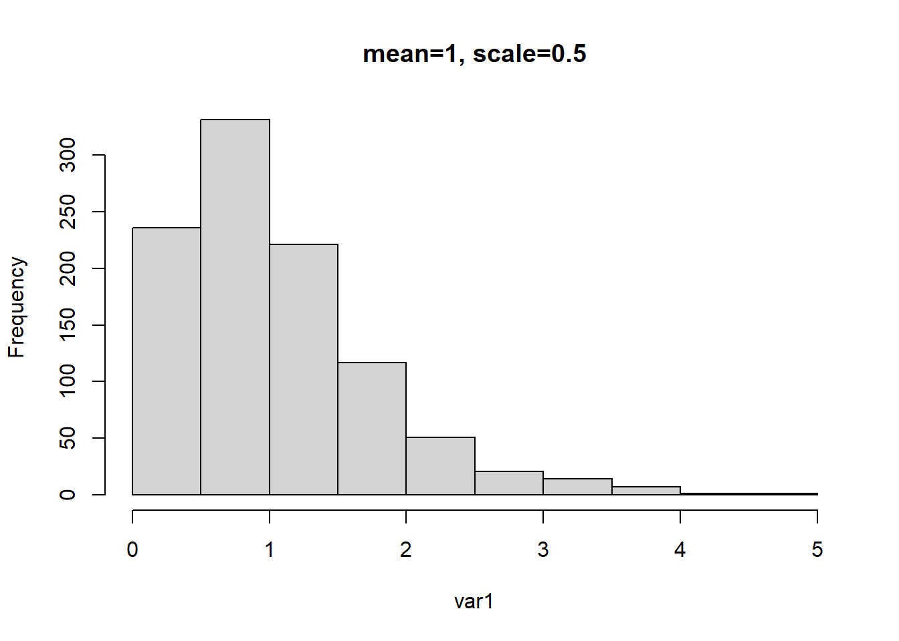
Note that the mean of this distribution should be 1 because the mean is equal to product of the shape parameter and scale parameter. So, 2 multiplied by 0.5 should be 1.
## Warning in glmmTMB(var1 ~ 1, family = Gamma(link = "inverse")): use of the
## 'data' argument is recommended## Formula: var1 ~ 1
## AIC BIC logLik df.resid
## 1822.0994 1831.9149 -909.0497 998
##
## Number of obs: 1000
##
## Dispersion estimate for Gamma family (sigma^2): 0.483
##
## Fixed Effects:
##
## Conditional model:
## (Intercept)
## 0.9657## [1] 1.035518In the above example we run a Gamma GLM as an intercept only model. By running an intercept only model we assume no other predictors can predict the response variable. Therefore the output from this model would simply be the mean of the response, which should be ~1 (which it is after applying the right link function to the intercept).
## Warning in glmmTMB(var1 ~ 1, family = Gamma(link = "log")): use of the 'data'
## argument is recommended## Formula: var1 ~ 1
## AIC BIC logLik df.resid
## 1822.0994 1831.9149 -909.0497 998
##
## Number of obs: 1000
##
## Dispersion estimate for Gamma family (sigma^2): 0.483
##
## Fixed Effects:
##
## Conditional model:
## (Intercept)
## 0.03491## [1] 1.035527The same is shown above but in this case we use a log link and so to back transform the intercept we exponentiate. Using either the inverse or log-link should give us the same answer.
4.4.2 Example 2
In the example below we generate another Gamma distributed variable but we change the shape and scale parameter. But because the mean is based on the product of the two, the mean remains as 1.
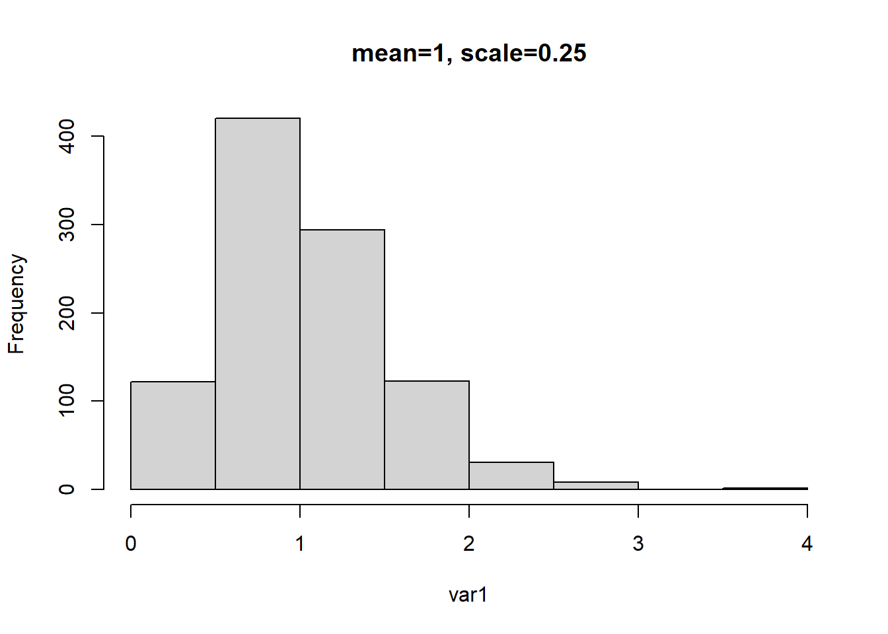
# mean = a (shape) * b (rate)
# mean = 4 * .25 = 1.0
g1 <- glmmTMB(var1 ~ 1, family=Gamma(link="inverse"))## Warning in glmmTMB(var1 ~ 1, family = Gamma(link = "inverse")): use of the
## 'data' argument is recommended## Formula: var1 ~ 1
## AIC BIC logLik df.resid
## 1281.0616 1290.8771 -638.5308 998
##
## Number of obs: 1000
##
## Dispersion estimate for Gamma family (sigma^2): 0.233
##
## Fixed Effects:
##
## Conditional model:
## (Intercept)
## 0.9711## [1] 1.02976## Warning in glmmTMB(var1 ~ 1, family = Gamma(link = "log")): use of the 'data'
## argument is recommended## Formula: var1 ~ 1
## AIC BIC logLik df.resid
## 1281.0616 1290.8771 -638.5308 998
##
## Number of obs: 1000
##
## Dispersion estimate for Gamma family (sigma^2): 0.233
##
## Fixed Effects:
##
## Conditional model:
## (Intercept)
## 0.02937## [1] 1.029806We once again repeat the same exercise as example 1 and see that when the appropriate back transformation based on link functions are applied to the intercept, it results in the original mean.
4.4.3 Example 3
In this example we change the mean of the distribution to 0.5 by changing the shape and scale parameters to 1 and 0.5 respectively. We then repeat the previous examples and run the inverse and log link Gamma GLMs and observe how the intercepts are backtransformed to approximate the previously set mean value.
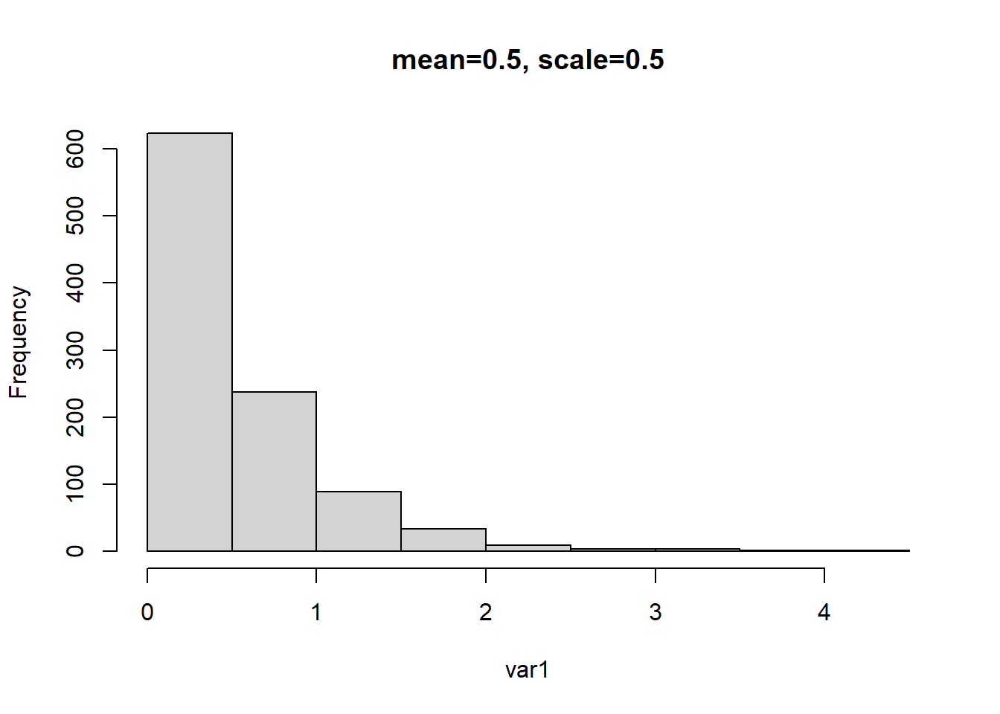
# mean = a (shape) * b (rate)
# mean = 1 * .5 = 0.5
g1 <- glmmTMB(var1 ~ 1, family=Gamma(link="inverse"))## Warning in glmmTMB(var1 ~ 1, family = Gamma(link = "inverse")): use of the
## 'data' argument is recommended## Formula: var1 ~ 1
## AIC BIC logLik df.resid
## 654.8480 664.6635 -325.4240 998
##
## Number of obs: 1000
##
## Dispersion estimate for Gamma family (sigma^2): 0.968
##
## Fixed Effects:
##
## Conditional model:
## (Intercept)
## 1.963## beta
## 0.5095401## Warning in glmmTMB(var1 ~ 1, family = Gamma(link = "log")): use of the 'data'
## argument is recommended## beta
## -0.6742484## beta
## 0.50953934.4.4 Example 4
This example follows the previous examples but with the mean changed to 0.25.
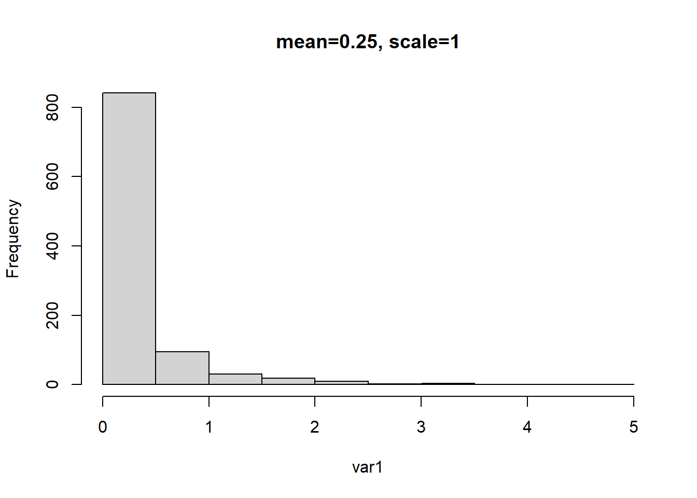
# mean = a (shape) * b (rate)
# mean = .5 * 1 = 0.5
g1 <- glmmTMB(var1 ~ 1, family=Gamma(link="inverse"))## Warning in glmmTMB(var1 ~ 1, family = Gamma(link = "inverse")): use of the
## 'data' argument is recommended## Formula: var1 ~ 1
## AIC BIC logLik df.resid
## -3174.013 -3164.197 1589.006 998
##
## Number of obs: 1000
##
## Dispersion estimate for Gamma family (sigma^2): 3.94
##
## Fixed Effects:
##
## Conditional model:
## (Intercept)
## 3.964## beta
## 0.2522893## Warning in glmmTMB(var1 ~ 1, family = Gamma(link = "log")): use of the 'data'
## argument is recommended## Formula: var1 ~ 1
## AIC BIC logLik df.resid
## -3174.013 -3164.197 1589.006 998
##
## Number of obs: 1000
##
## Dispersion estimate for Gamma family (sigma^2): 3.94
##
## Fixed Effects:
##
## Conditional model:
## (Intercept)
## -1.377## beta
## 0.25228954.5 Briefly running Gamma GLMs
In this section we simulate data for two groups:
set.seed(25)
v1 <- rgamma(100, shape = 3, scale = .5) %>% as.data.frame()
colnames(v1) <- "var"
v1$group <- "one"
head(v1)## var group
## 1 1.0881400 one
## 2 2.4520815 one
## 3 3.5583571 one
## 4 0.9405657 one
## 5 0.9225875 one
## 6 1.4339098 onev2 <- rgamma(100, shape = 1, scale = .2) %>% as.data.frame()
colnames(v2) <- "var"
v2$group <- "two"
head(v2)## var group
## 1 0.15108136 two
## 2 0.01761541 two
## 3 0.47914554 two
## 4 0.05403794 two
## 5 0.13555345 two
## 6 0.19157853 twoThen bind the two groups into one dataset:
dat1 <- rbind(v1,v2) #mean group 1 = 1.5, group 2 = 0.5
dat1 %>% mutate(obs=rep(1:100,2)) %>% group_by(obs) %>% pivot_wider(names_from = group,values_from = var) %>%
ungroup() %>% select(one,two)## # A tibble: 100 × 2
## one two
## <dbl> <dbl>
## 1 1.09 0.151
## 2 2.45 0.0176
## 3 3.56 0.479
## 4 0.941 0.0540
## 5 0.923 0.136
## 6 1.43 0.192
## 7 0.559 0.185
## 8 1.20 0.0195
## 9 1.15 0.0725
## 10 0.854 0.00261
## # ℹ 90 more rowsWe then check the data distributions:
Figure 2.41: Histogram.
ggplot(dat1, aes(x=var)) + geom_histogram(bins=8, fill="grey", color="black") +
facet_wrap(~group, scales="free") + theme_bw(base_size = 16)Figure 4.17: Histogram for each group.
Then we construct several different models (a Gaussian, a Gamma, and a log-normal) and use AIC to compare models. Obviously we know the data come from a Gamma distribution because we simulated them. However, we will fit these different models to examine model fit using residuals and AIC.
#### construct model w/ normal distribution
mod0 <- glmmTMB(var ~ group, data=dat1)
plot(simulateResiduals(mod0))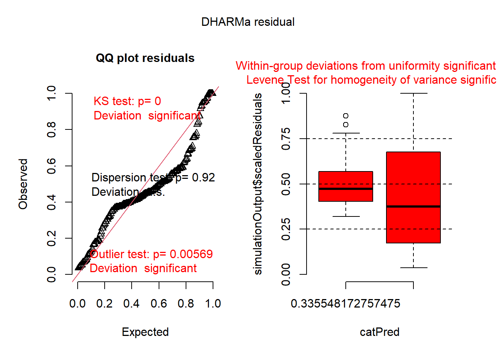
## Family: gaussian ( identity )
## Formula: var ~ group
## Data: dat1
##
## AIC BIC logLik deviance df.resid
## 408.0 417.9 -201.0 402.0 197
##
##
## Dispersion estimate for gaussian family (sigma^2): 0.437
##
## Conditional model:
## Estimate Std. Error z value Pr(>|z|)
## (Intercept) 1.49247 0.06610 22.58 <2e-16 ***
## grouptwo -1.28086 0.09349 -13.70 <2e-16 ***
## ---
## Signif. codes: 0 '***' 0.001 '**' 0.01 '*' 0.05 '.' 0.1 ' ' 1## group emmean SE df lower.CL upper.CL
## one 1.492 0.0661 197 1.3621 1.623
## two 0.212 0.0661 197 0.0813 0.342
##
## Confidence level used: 0.95#### construct model w/ log-normal distribution
mod0a <- glmmTMB(log(var) ~ group, data=dat1)
plot(simulateResiduals(mod0a))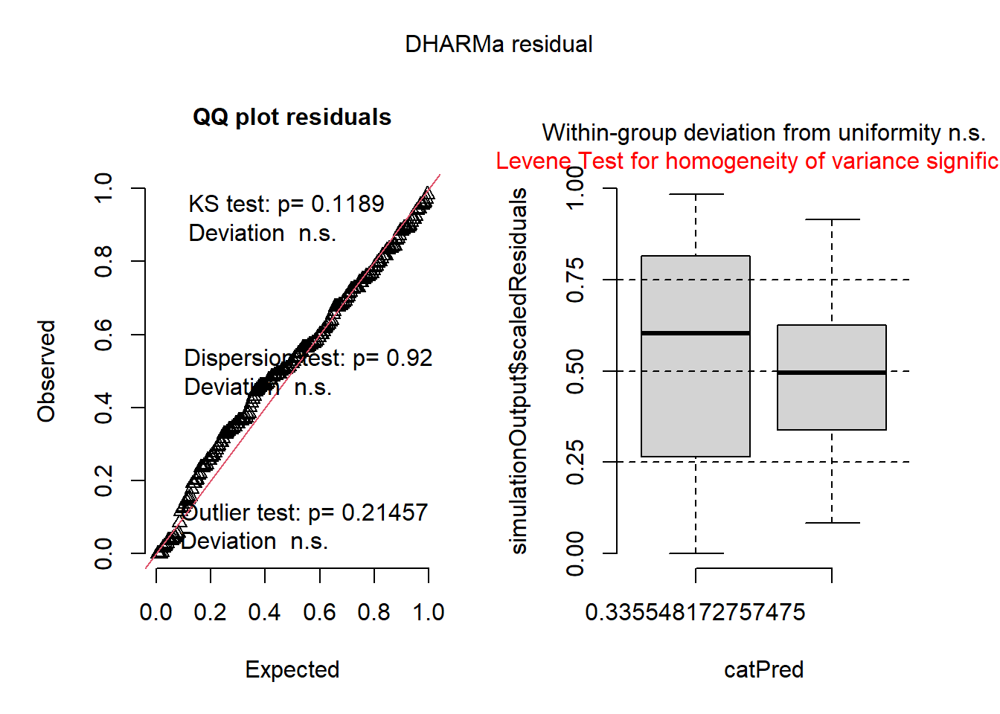
## Family: gaussian ( identity )
## Formula: log(var) ~ group
## Data: dat1
##
## AIC BIC logLik deviance df.resid
## 585.6 595.5 -289.8 579.6 197
##
##
## Dispersion estimate for gaussian family (sigma^2): 1.06
##
## Conditional model:
## Estimate Std. Error z value Pr(>|z|)
## (Intercept) 0.2288 0.1030 2.221 0.0264 *
## grouptwo -2.3798 0.1457 -16.330 <2e-16 ***
## ---
## Signif. codes: 0 '***' 0.001 '**' 0.01 '*' 0.05 '.' 0.1 ' ' 1## group response SE df lower.CL upper.CL
## one 1.257 0.130 197 1.026 1.540
## two 0.116 0.012 197 0.095 0.143
##
## Confidence level used: 0.95
## Intervals are back-transformed from the log scale#### construct model w/ Gamma distribution and inverse link
mod1 <- glmmTMB(var ~ group, data=dat1, family=Gamma(link = "inverse"))
plot(simulateResiduals(mod1))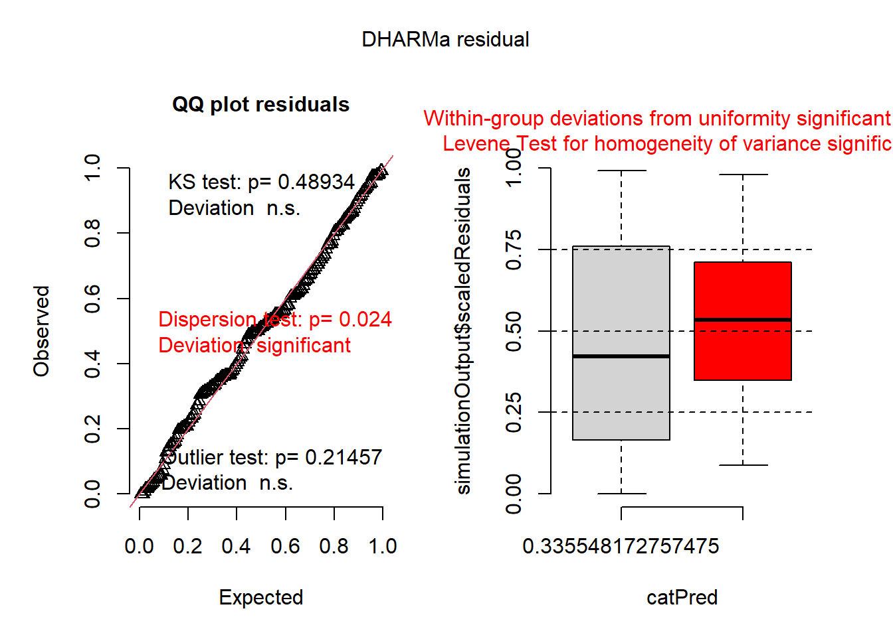
## Family: Gamma ( inverse )
## Formula: var ~ group
## Data: dat1
##
## AIC BIC logLik deviance df.resid
## 160.7 170.6 -77.3 154.7 197
##
##
## Dispersion estimate for Gamma family (sigma^2): 0.693
##
## Conditional model:
## Estimate Std. Error z value Pr(>|z|)
## (Intercept) 0.67003 0.05577 12.01 <2e-16 ***
## grouptwo 4.05552 0.39726 10.21 <2e-16 ***
## ---
## Signif. codes: 0 '***' 0.001 '**' 0.01 '*' 0.05 '.' 0.1 ' ' 1## group response SE df asymp.LCL asymp.UCL
## one 1.492 0.1240 Inf 1.283 1.783
## two 0.212 0.0176 Inf 0.182 0.253
##
## Confidence level used: 0.95
## Intervals are back-transformed from the inverse scale#### construct model w/ Gamma distribution and log link
mod2 <- glmmTMB(var ~ group, data=dat1, family=Gamma(link = "log"))
plot(simulateResiduals(mod2))## Family: Gamma ( log )
## Formula: var ~ group
## Data: dat1
##
## AIC BIC logLik deviance df.resid
## 160.7 170.6 -77.3 154.7 197
##
##
## Dispersion estimate for Gamma family (sigma^2): 0.693
##
## Conditional model:
## Estimate Std. Error z value Pr(>|z|)
## (Intercept) 0.40043 0.08323 4.811 1.5e-06 ***
## grouptwo -1.95342 0.11771 -16.595 < 2e-16 ***
## ---
## Signif. codes: 0 '***' 0.001 '**' 0.01 '*' 0.05 '.' 0.1 ' ' 1## group response SE df asymp.LCL asymp.UCL
## one 1.492 0.1240 Inf 1.27 1.757
## two 0.212 0.0176 Inf 0.18 0.249
##
## Confidence level used: 0.95
## Intervals are back-transformed from the log scaleAIC:
## df AIC
## mod0 3 408.0006
## mod0a 3 585.5705
## mod1 3 160.6724
## mod2 3 160.6724Which model is the best ranked model?